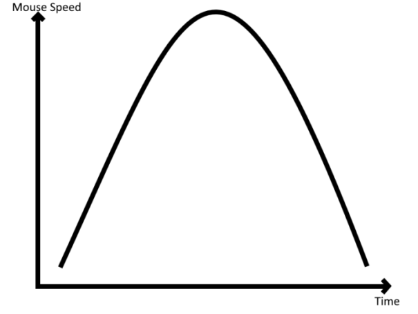

Trades
Basics of PvP:
- High cps - less kb; more slowdown; better hitreg
- Sprint-resets - way to gain more reach/ deal more kb (w-tap, s-tap, sneak reset, jump reset, sprint-tap)
- Ping - affects both parties the same way (neither low nor high ping grants you an advantage)
- Speed - more speed gives you more reach
- Strafing - is mostly used to make the opponent miss his hit
Hit Selection:
Hit selecting means to manipulate the hit sequence in a way that gives you an advantage (low ground, speed/range advantage).
Delay your hit on purpose to have the opponent hit first. This will lead to you getting knockback first, which also means that you are the first one back at the ground. You gain a reach advantage here by having low ground but you also have more time to accelerate (an even bigger reach advantage).
In some cases, you do not get the combo after 1 hit sequence. This means that you have to try manipulating the hit sequence again/delaying the hit even more in most cases.
This can be done by:
- Waiting before you hit
- Changing the way you w-tap (changes the time between the hit sequences because you are in reach faster/slower)
- Long block hits (automatically delays your hit a bit)
You can get better hit selection results by using amplified hit selection. This means you must let go of w before getting hit and wait even longer before placing your first hit. This tends to be more effective when done correctly but the time window for this is more narrow and it's easier to counter. In most cases, it leads to a cleaner combo start, because of a better hit sequence at the start of the combo compared to normal hit selection.
A perfect hit selection can not be countered, but there are a few hit selections that work most of the time:
- Outmoving (by using your aim to strafe outwards, which leads to them missing their hit)
- Playing unpredictably/badly on purpose
- Hit counter (letting go w before the trade, which makes you gain the advantage of hit selection instead of him, but the timing window for this is extremely narrow)
- Also hit selecting (hitting even later than him)
- Not sprint resetting (confuses the opponent)
https://www.youtube.com/watch?v=ndHSpA-6bxk
https://www.youtube.com/watch?v=eVYpge_lQMI
https://www.youtube.com/watch?v=lPIXs1Rp06g
https://www.youtube.com/watch?v=MxdSQdP02lU
https://www.youtube.com/watch?v=lPsrFLsIc0o
Spacing
Good spacing requires 2 things:
- You need to be able to hold a combo consistently.
- It also needs to look like the opponent is not getting kb after every hit.
You need a few things to achieve the second part. I recommend playing on the server proxy where your ping is the closest to 80ms. You also need perfect timing. Most people can improve their spacing by "hitting later" (later in the span of the entire hit sequence).
You should also get as close as you can to the opponent whilst strafing without failing the combo. Getting closer to the enemy will make it look like you are going faster. It reduces the radius of the strafe (circle strafe) and thus increases the relative speed compared to the opponent. This is hard to do but will look much better.
You also need to have "Dynamic FOV" on in able to make your spacing look good.
https://www.youtube.com/watch?v=T9e6Eh3Ay4s
https://www.youtube.com/watch?v=v11zYziYYUA
https://www.youtube.com/watch?v=4djqYrnChbY
Movement
Movement is the most important in trades but it's also important during a combo if you want a good-looking video. The best way to move in trades is by strafing unpredictably.
You can also use something called Counterstrafe. This means that you look where your opponent is aiming at/predicting in which direction he's going to aim and then strafing in the other direction.
Movement in combos is very closely tied to spacing. You typically want your combos to look smooth so try to play as consistently as possible. Micromovement can be usual in trades (especially in a no-speed fight). Right before the trade you spam a and d after another and decide a strafe direction just before you can hit him. This often leads to the opponent not being able to predict where you are going/him missing his first hit.
Outmoving is very similar. I explained it in trades. It is the most effective way to strafe but also by far the hardest. Another way to outmove people is by going around the opponent. Going behind your opponent tends to only work against newer PvP Players in a normal scenario. The opposite (going in front of them) is also usable against more experienced players. This mostly only works in Nodebuff, Soup or Ranked Boxing. After they run away from you to refill they expect you to hit them from behind. Using a bit of extra time to get in front of the opponent is very useful to confuse the opponent.
https://www.youtube.com/watch?v=ijOv1FmFaZo
https://www.youtube.com/watch?v=EB3UbvxvjeI
Aiming
Aiming in Minecraft is relatively easy. Most of it is just having game knowledge/being able to predict your opponent’s movement combined with smooth mouse movements. There isn't really any real tracking required in Minecraft because you are the one who controls the direction of the strafe in your combo. A better aim in trades is very useful to be able to hit select/trade in general. Use a medium-high sensitivity. Higher sens helps you with flicking and can help whilst hitselecting (when they run through you) but a lower sens helps you control the game more easily and it makes it easier to "track". Aimtrainers will NOT help you with your Minecraft aim (only playing the game itself will). Remember that your Aim is closely related to your movement and spacing. The better your movement/spacing the easier it is to aim (it also works the other way around).
https://www.youtube.com/watch?v=cR-o2YAEQ2M
https://www.youtube.com/watch?v=7iPLGT66FiE
Styling
There are a few things that are important for good styling. These include:
- Styling accuracy (most important)
- How flashy your styling is
- If it amplifies your movement
- Sticking to the same style during a combo
- Speed curve of mouse movement
- When you style during a full hit sequence
Styling accuracy is easily explained. you just have to make your mouse movement as accurate as humanly possible.
How flashy your styling is is mostly dependent on your sensitivity (higher sensitivity = less easy to control but more flashy in general). This is usually the aspect that targets newer players. They think that the more flashy a player flicks the better he is but in most cases, this is not an accurate way to measure skill.
Your styling can amplify your movement. In most cases, this means that you flick outwards (of the circle strafe). You aim outwards of the strafe thus gaining more speed (walking to the front is faster than strafing to the side), but you have to keep in mind that this changes where you have to land with your crosshair at the end of the flick. It also changes the hit sequence/your spacing, because you are gaining more distance. This is usually only used by experienced players and can be somewhat difficult (especially when you are not used to it).
This is the ideal speed curve of your mouse movement:
This means that you should have the most amount of mouse speed in the middle of the flick/360. The start/end of the flick should have slow mouse movement. This will lead to your styling looking much cleaner. you should always flick right after hitting your opponent. Do not wait a bit before doing so. Try to always flick in the same timeframe.
https://www.youtube.com/watch?v=3M6t0OjAQJg
https://www.youtube.com/watch?v=Q1f8JYhKgNA
https://www.youtube.com/watch?v=VnZ37r3lRwA
Advanced Strats
-
Hit selection counter counter: People will be able to tell if you are gonna hit select if you do not hit before the trade. You can bypass this by stopping to hit at the very last second. This gives them time to able to start a hit selection counter.
Here is a frame-perfect example: https://www.youtube.com/watch?v=ejYqh99GgoU (1:00)
-
Jump resets: can be used to confuse the opponent but does not work to reduce kb (do NOT do this it does not work and will give you a disadvantage)
Video example: How to use jump resetting - YouTube
-
An alternate form of amplified hit selection: This only works when a low-ping player fights a low-ping player. Try to start walking forward again just as you are going to hit. This works against people who themselves are doing amplified hit selection.
Video example: https://www.youtube.com/watch?v=5U7iTS2tVf8 (0:09)
-
360s to start a combo: 360s can actually be used as a better alternative to s-taps at the beginning of a trade. It tends to confuse the opponent but is hard to perform.
Video example: https://www.youtube.com/watch?v=BmihaAjaQuU
-
“Throwing" your opponent into a combo: This requires a lot of game knowledge. You need to know when the opponent is going to hit select/place his first hit and out-moving him.
Video example: https://www.youtube.com/watch?v=tqCSZDEgNtI (2:00)
-
"blitzstrafe" This requires extreme gamesense and timing. You compliment your zigzag strafe pattern with little flicks to the side. If done right this will give you an extreme amount of speed (hence the name blitzstrafe) and it will look distorted/like you are not even hitting the enemy (depending on your/the opponents ping).
video example: